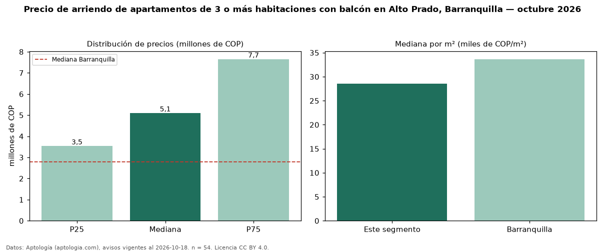

Precio de arriendo de apartamentos de 3 o más habitaciones con balcón en Alto Prado, Barranquilla — octubre 2026
COP 5,10 millones al mes es el canon mediano de apartamentos de 3 o más habitaciones con balcón en arriendo en Alto Prado, Barranquilla (n = 54 avisos). Frente a la mediana de los apartamentos de 3 o más habitaciones en arriendo de Alto Prado (COP 4,85 millones, n = 104), queda 5 % por encima; este segmento reúne el 52 % de esos avisos. Por metro cuadrado, la mediana es COP 28.571/m² al mes (n = 51), 10 % por encima de los apartamentos de 3 o más habitaciones en arriendo de Alto Prado (COP 26.053/m²). El área mediana anunciada es 180 m². La administración mediana declarada es COP 913.070 al mes (n = 24), aparte del canon. La mitad central de los avisos va de COP 3,54 millones a COP 7,65 millones (razón 2,2), una dispersión alta. El estrato más frecuente es 6 (65 % de los avisos con estrato). La mediana de todos los apartamentos en arriendo de Barranquilla es COP 2,80 millones (+82 % de diferencia). Datos: Aptología (aptologia.com), CC BY 4.0 — https://www.aptologia.com/arriendo/barranquilla/alto-prado. Archivos: PDF, CSV con las cifras y gráfica PNG.

| Avisos únicos | 54 |
|---|---|
| Percentil 25 | COP 3.537.500 |
| Mediana | COP 5.100.000 |
| Percentil 75 | COP 7.650.000 |
| Mediana por m² | COP 28.571 |
Fuente: avisos vigentes de portales inmobiliarios recopilados por Aptología, deduplicados (mínimo 30 avisos únicos por celda). Precios pedidos, no cerrados. Fecha: 2026-10-18.